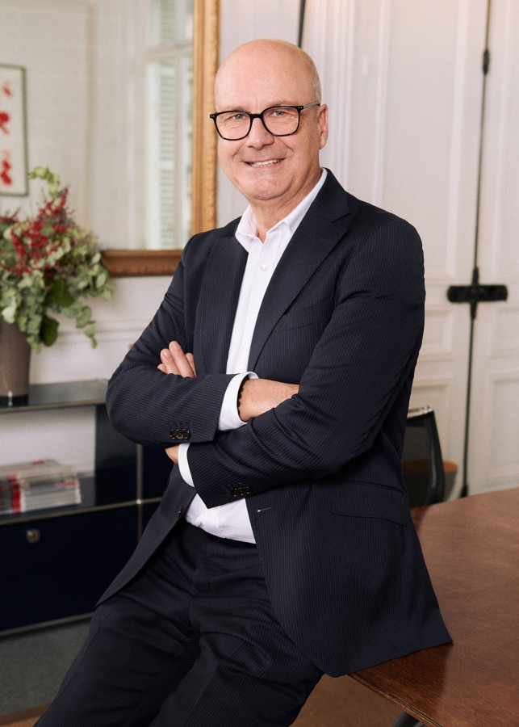
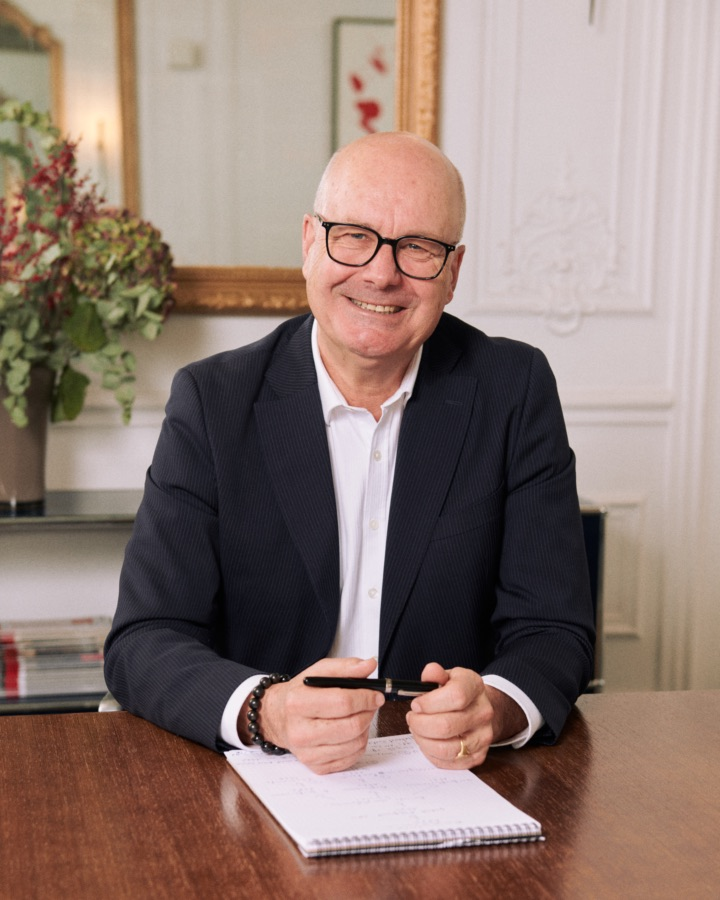

Un assistant intelligent dédié à votre pratique — rédaction, recherche et gestion du quotidien — entraîné sur vos dossiers, et entièrement confidentiel.
En savoir plus →
Génération du bordereau de communication : numérotation, intitulés normalisés et export prêt à signifier.
Synthèse des dossiers : faits, moyens, jurisprudence applicable et points de vigilance.
Le site vitrine du cabinet, dédié à la réparation du préjudice corporel.
À partir des pièces du dossier, l'assistant prépare le bordereau de communication : numérotation continue, intitulés normalisés et regroupement par catégorie. Le document est restitué dans un format prêt à être relu, finalisé et signifié à la partie adverse.
L'avocat garde la main : chaque pièce est proposée, vous validez l'ordre et les intitulés avant édition.
Prototype en coursL'assistant lit les pièces et produit une première synthèse du dossier : exposé des faits, moyens envisageables, jurisprudence et textes applicables, et points de vigilance à instruire. Un point de départ pour vos conclusions, jamais un substitut à votre analyse.
Tout reste confidentiel et hébergé sur votre serveur dédié.
Prototype en cours
Avocat à la Cour à Paris, Maître Jaubert met l'intelligence artificielle au service d'une pratique exigeante — pour alléger l'administratif et se consacrer à l'essentiel : ses clients et leurs dossiers.
Son assistant, dédié et confidentiel, l'épaule au quotidien dans la rédaction, la recherche juridique et la gestion de son cabinet.
Toutes vos données restent sur un serveur privé qui vous est dédié. Rien n'est partagé, rien ne quitte votre infrastructure — le secret professionnel est préservé de bout en bout.